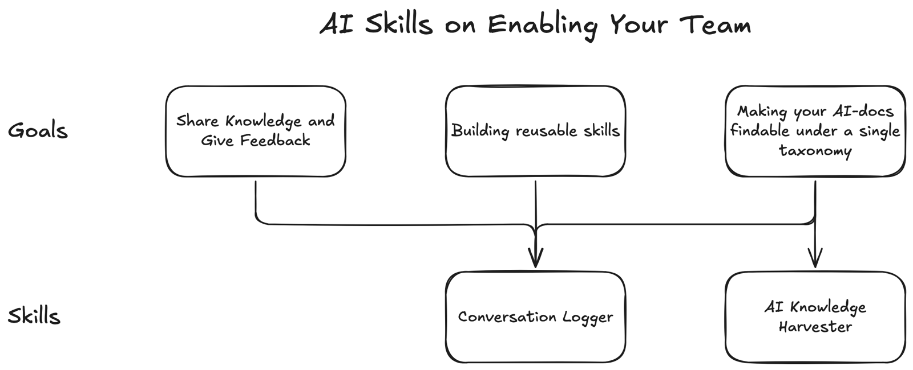

The video walks through three goals and then the two skills, in that order, and so does this page. Each part links to its moment in the video.
First published on LinkedIn on April 12, 2026. Rewritten for this site in October 2026. Code: ai-builder-kit at 93cfafd, the version from the day of the video. Example output: the ai-docs folder of ciam-demo.
What changed since April
Both skills are still in ai-builder-kit, and the logger kept changing as I used it. In April I added a sibling, chat-conversation-logger, for conversations in the Claude.ai chat app. In May the logger moved from one long prompt-log.md per project to one file per session, named by date, a counter and a topic, so a folder listing reads in time order. The harvester's taxonomy is unchanged.
1. Goal one: help my team get better at AI
The first goal I have for everyone is to think about how we make our teams better at using AI. I've tried a lot of methods, on my project team and in other parts of Accenture. The best one I've seen, from other people and from doing it myself, goes like this. First I show people what I do on a common project task. Then I watch them do a similar task, and I tell them three things I like and one thing they could think about.
Every once in a while someone asks me something right on point and fairly difficult, and I think: I did this two weeks ago. If only I had a way to show them what I did. But that was on my AI laptop, which isn't my Accenture laptop, and I can't just whip up the situation and the prompt that solved it. That happens more often than I like to admit.

Watch this part0:21 Making the team better at AI
2. The Conversation Logger captures what I typed
So I started standardizing how I log my AI conversations. Think about any kind of engineering in STAR terms: the situation you're in, the task you're given, the action you take, and the result. With AI, the action is the prompting. The Conversation Logger focuses on the action I take with AI, not so much on what AI does. It still captures the AI's side, it just isn't the main record.
Here's a real one, from a Sunday morning session on my CIAM demo, a customer identity and access management proof of concept. The logger kept what I typed verbatim, including answers to the questions AI asked me, and summarized each response and action in a line:
### Prompt 4: Four Architecture Decisions (10:25 AM)> (Answered refined 4 questions:)> - Auth code flow: Headless OIDC + updated the design markdown> - Java 8 compat: Portable utility classes (Recommended)> - Session mgmt: Focus spec on auth only> - Login page arch: Next.js client component (Recommended)→ Response: Read updated `input-design-pkce.md` (now with sequence diagram showing React→Keycloak→Spring flow), wrote full v1.3 incremental PRD.Not every prompt works the first try, and the log shows that too: each follow-up, as I typed it. I use voice to text a lot, so the prompts aren't polished, and that's fine. What you put into the system matters, and so does what the system has (MCP servers, tools, skills, specs). The most important part is how you use AI. When a teammate asks "Jack, have you done this?", I can pull up the log and show exactly what I put into Claude Code or GitHub Copilot to move forward.
The skill tells the model to record the human side in full and the AI's side in one line each, "like a lab notebook". It also works out which tool it is running in, so it can read real prompt timestamps from that tool's history file instead of guessing:
if [ "$CLAUDECODE" = "1" ]; then echo "claude-code"elif [ -d "$HOME/.codex" ]; then echo "codex"else echo "unknown"; fiClaude Code keeps its history in ~/.claude/history.jsonl and Codex in ~/.codex/history.jsonl. Copilot keeps chat history inside VS Code's own databases, so there the log falls back to the current time and says the timestamps are approximate.
Watch this part1:16 Why log the human side1:51 A real log
3. Goal two: make one-time AI work repeatable
The second goal is building reusable skills. My example is the same CIAM demo. AI did most of the work of setting up the identity system, on Keycloak hosted by Phase Two. I had never set up a system like this before. AI did the research, told me the manual steps, and wrote the shell scripts that configure it, which got my proof of concept done. As far as I can tell, it did the work correctly. And I wanted that to be repeatable.
So I asked Anthropic's out-of-the-box skill creator for Claude to build a skill from it. I pasted in the prompt blocks I used to generate the specs, and the goal: other people pass in their CIAM requirements and get similar output. Then I pointed it at the code, so it would know what the result was. It read my markdown files, read what makes a good skill, and built one from the situation, my prompts as the action, and the shell scripts as the result. After about five minutes I had a CIAM architect skill that can repeat something I had done once.
The result it learned from is public: twelve numbered scripts in ciam/scripts, from 00-helpers.sh and 01-configure-realm.sh to 11-configure-frontend-mappers.sh, plus a setup-all.sh.
Watch this part3:26 Building reusable skills4:21 The skill creator5:51 The finished skill
4. Goal three: one prompt is not enough, you need a prompt packet
The third goal is cataloging my AI work in a way that's findable, so I can turn it into a harness later. The way I think about AI, my four patterns all build around skills at the lowest level. If I capture capabilities as skills, I can make AI do a lot more with harnesses and a 24-hour agent. (That's the stack from Making AI-Driven Development Modules Reusable.)
Some builds take a lot of planning. You feed AI a very large prompt, a prompt packet, and it plans and builds in phases. For the CIAM demo I used Claude's agent teams, similar to Kimi's agent swarm. The kickoff prompt doesn't do that work justice. It points to a kickoff guide, and the kickoff guide sets a reading order for six documents. So logging prompts isn't enough. If you want to build something complex, you need the packet, and you need to get all of it checked in somewhere you can find it.
Watch this part6:17 Making AI work findable6:54 Prompt packets
5. The AI Knowledge Harvester files it under one taxonomy
That's my second skill. The Conversation Logger looks at your current session and your Claude Code or Copilot history. The AI Knowledge Harvester collects everything else: specs, prompt logs, working docs and prompt packets, filed in one consistent taxonomy. If you're into digital asset management, you know taxonomy is big. I wanted all the AI knowledge behind my capabilities in one repository with a documented taxonomy.
The rules are simple enough to try by hand. The first tier is always the GitHub repo name. The second tier is the sub-project, or the repo name again for a simple repo. Then one folder per document type, and a file name that starts with the date, so every folder sorts in time order. Sources stay where they are, and it never pushes. Pick a file and see where it lands:
Example files, from the skill's own docs and ciam-demo
Lands at
ai-knowledge/projects/jack-dev-server-configs/generic-harness-v1/prompt-logs/2026-04-12-01-prompt-log.md
- Tier 1 is the GitHub repo name:
jack-dev-server-configs. - Tier 2 is
generic-harness-v1: the path starts with local/generic-harness-v1/, so this is a monorepo sub-project. - Type is
prompt-log: it reads like a session log, prompts followed by → Response and → Action lines. - The name is the date, a sequence number and a slug, so the folder sorts in time order.
- It is a copy. The source file stays where it is.
Every harvested file also gets frontmatter: title, project, sub-project, type, date, why it is private, status, source repo and source tool. You can see the result in the public ciam-demo repo, where the harvest left three folders: specs, prompt-logs and working-docs, each file dated and numbered.
Watch this part8:04 The AI Knowledge Harvester
6. Installing them, and what I learned
Both skills are open source in ai-builder-kit. Install them with one command:
npx skills add jackzhaojin/ai-builder-kitPick the skills with the space bar (I picked the AI Knowledge Harvester and the Conversation Logger), hit enter, and you're done. On camera I said "npx skill add"; the command in the repo's README is npx skills add.
I'm still early on all of this. Logging the human side has been more useful than logging the AI's output, a one-off build can become a skill if you hand the skill creator your prompts and your results, and findable takes a taxonomy, not just saved files. What I don't have yet is the best coaching loop for a team; three things I like and one thing to think about is where I am today. If you are thinking about team AI enablement, I'd like to hear what is working for you.
Watch this part9:04 Installing the skills